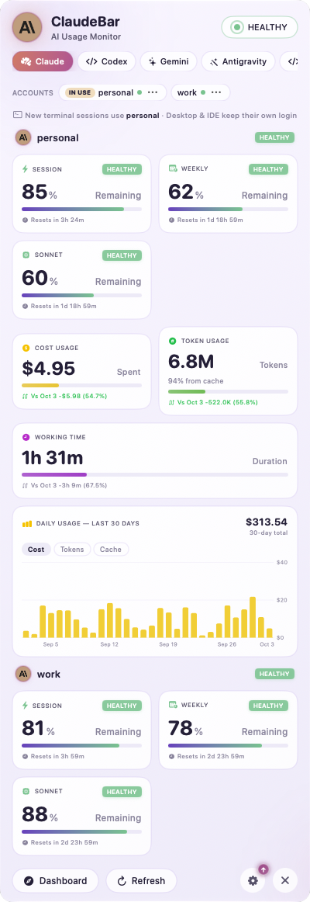
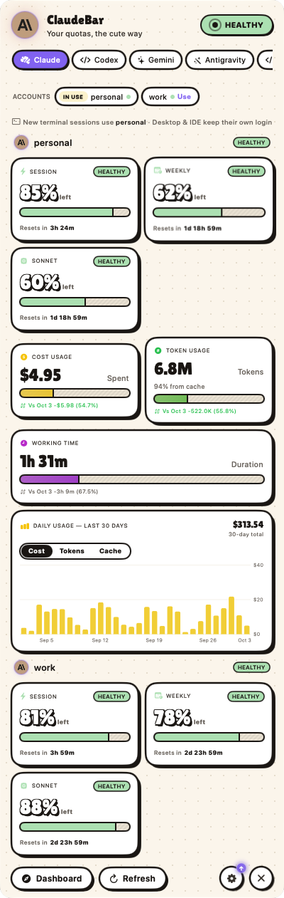
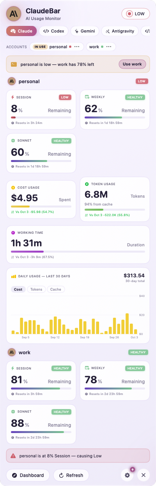
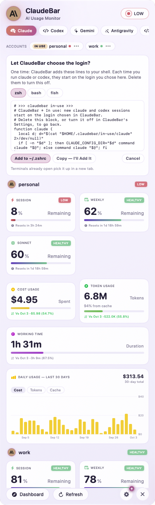
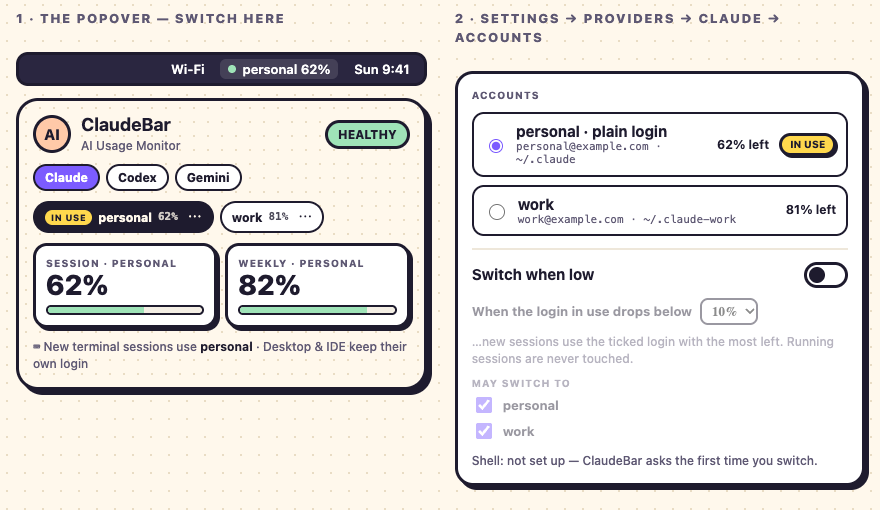

The real app (Debug build of feat/in-use) on mock data — DEMO_SCENE=in-use scripts/demo-screenshots.sh: sample logins personal and work, no real account, email or usage. Below each, what is wrong, and the proposed fix to confirm.




claudebar://use?…&account=work before the shell lines exist: the setup card.Menu with a lone chevron.)~/.claudebar/in-use/<command>; a CLI is wrapped once however many products run it, and the setup names each once — "claude or codex". (It said "claude, codex, or claude" and wrote function claude twice.)
design-concept/in-use/index.html) — the design to build.~/.claudebar/in-use/<command> — claude, codex. One function per command, written once. Two products on the same CLI share its record: the last choice wins, and the other product's strip shows its plain login (a folder it doesn't have is the plain login — the law already says so). The setup names each command once.
NewSessions (the commands, unique) and LoginsInUse.